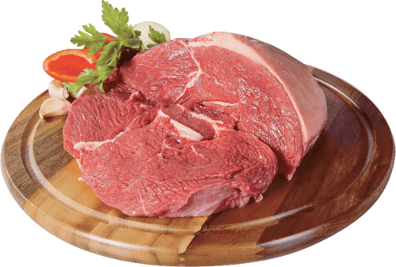

Mapa CarneCerta
Sabor marcante e versatilidade premium
A alcatra combina estrutura firme com excelente resposta em grelha, panela e cortes mais grossos.

Ideal para • churrasco • bifes • panela
Maciez
4/5
Boa textura
Gordura
2/5
Equilibrada
Sabor
5/5
Marcante
Abrir recomendador inteligente
Alcatra
Corte de sabor intenso e textura equilibrada, perfeito para quem busca versatilidade sem abrir mão de identidade no prato.
A alcatra se destaca em cortes mais grossos, grelha e assados com sal grosso ou marinadas simples. Também responde muito bem em panela quando o objetivo é um prato mais encorpado e saboroso.
Assados
Bifes grossos
Panela
4.8
Perfil versátil
Excelente para quem quer um corte com boa estrutura, sabor profundo e boas opções de preparo, do churrasco ao prato de panela.
Ideal para
Dica do açougueiro IA
Para destacar o sabor, use sal grosso e uma cocção firme. Para prato mais macio, corte em peças mais grossas e cozinhe com cuidado.